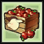
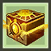
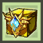
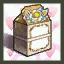

Inside Elsword game there's a lot of types of items.
Consumables are items that can be consumed exclusively within dungeons and fields. There are a wide variety of consumables, each with their own benefits. They can be used for recovery, dealing damage, applying buffs, and other unique uses depending on the item. Consumables are are stored in the Consume tab, and must be placed in your quick slot bar in order to consume them during gameplay.
Cubes are items that you can open to reveal various predetermined, or random loot. They are one of the most common ways for rewards to be distributed, and there are a large variety of cubes available, which can be obtained by various means. Most cubes can be opened free of charge, however some require you to spend ED to open them, while others may even require a key obtained from events. Items inside of them vary from cube to cube, and will either be displayed in the cube's description, or a roulette will be displayed upon opening cubes that have a random loot chance, allowing to a preview of what the cube may contain.
| Image | Name | Description |
|---|---|---|
 |
Secret Dungeon Cube | Secret Dungeon Equipment Cubes are obtained as rare drops from Secret Dungeon bosses. You can obtain a cube for each type of equipment piece. |
 |
Field Boss Cube | A mysterious cube obtained after defeating Field Bosses. Looks like something heavy is inside. |
 |
Resurrection Stone Cube | A cube containing a set amount of resurrection stones. |
|  | William's Apple Crate | This crate contains apples that William has harvested this year. It produces a random apple. |
|  | Heroic Equipment Storage | A box stored with an equipment used by a hero. It is imbued with the energy of a Hero. |
|  | Golden Accessory Case | A golden accessory case that contains bright accessories. It's unclear what accessories are inside. |
|  | Wedding Anniversary Cube | A cube to celebrate a couple's anniversary. |
The mount system allows you to hop onto powerful mounts that you can ride to help you progress through dungeons.
Mounts come with a number of unique features and abilities to aid you in combat. While riding your mount, your skills will change into Mount Attack Skills. Each Mount has a different set of skills available, and they can be used by pressing the [Z], [X], [C] buttons. Each mount controls and moves differently, and has their own individual perks. One such example, is that the Cockatrice can double jump while the Ponggo Scorpion TYPE-R is able to air-dash and glide.
The mount's damage output is taken from the average of your Physical and Magical AttackThe cooldown and MP cost of each type of mount attack will be identical [Z] attacks have no cooldown, [X] attacks have a 5 second cooldown and [C] attacks have a 10 second cooldown and requires 250 MP.
Pets are alies that helps you in battle(attacking), gives you stats(pet's pasive) and also can pick up for you all the items drops in dungeons.
Pets will grow as you feed them with El tree seeds, El tree fruits, Equipments, Special jellies and Mysterious weeds.
Pets will accept equipment of any level, although the amount of hunger replenished decreases based on the level difference between your character and the equipment.The better the equipment, the greater the hunger replenishment. Weapons replenish their hunger much greater than regular armor.Once the pet's Affinity is over 70%, your pet will enter a state called "Special Mode" It can be identified by the prefix Special on the pet's name once he enters that state.During Special mode, the pet will only accept El Tree Seeds or El Tree Fruits and will no longer accept any equipment until it reaches its next level.If you would like to remove "Special Mode", just simply not feed your pet until his Hunger is low, which results on your pet's Affinity to lower.Once your pet's Affinity is below 70%, your pet will not be in "Special Mode" anymore, though you can obtain it again anytime you wish.
There are over 70 pets in Elsword.